Rehabilitación Oral
Tratamiento principal orientado a recuperar la función, forma y estética de los dientes.
- Evalución personalizada.
- Recuperación de pieszas dentales.
- Mejora estética y funcional.
Rehabilitación Oral y Estética Dental
Atención odontológica profesional para pacientes que buscan mejorar su salud dental y estética con un enfoque elegante, humano y personalizado.
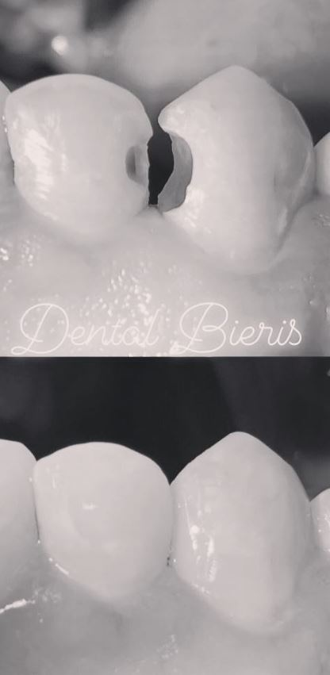
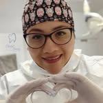
Sobre mí
Cirujana dentista con enfoque en Rehabilitación Oral, estética dental y tratamientos orientados a mejorar la salud, función y apariencia de la sonrisa.
COP 38185
Servicios odontológicos
Brindamos servicios enfocados en salud oral, estética dental y recuperación funcional de la sonrisa.
Tratamiento principal orientado a recuperar la función, forma y estética de los dientes.
Procedimientos para mejorar la apariencia de la sonrisa de forma armónica y natural.
Tratamientos para corregir la posición de los dientes y mejorar la mordida.
Tratamiento indicado cuando el interior del diente se encuentra afectado.
Alternativa para reemplazar piezas dentales perdidas y recuperar seguridad al sonreír.
Procedimientos quirúrgicos odontológicos para casos que requieren atención especializada.
Resultados y sonrisas
Algunas referencias visuales de tratamientos y resultados odontológicos.
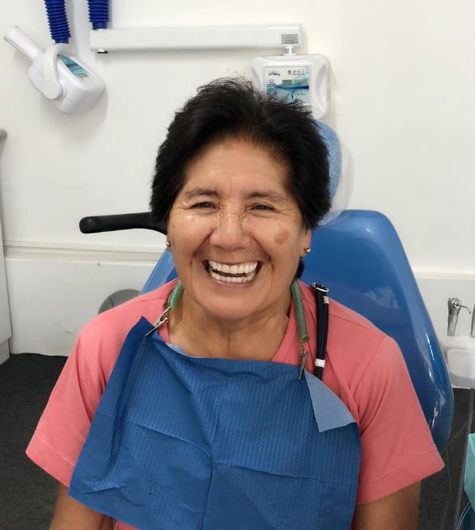
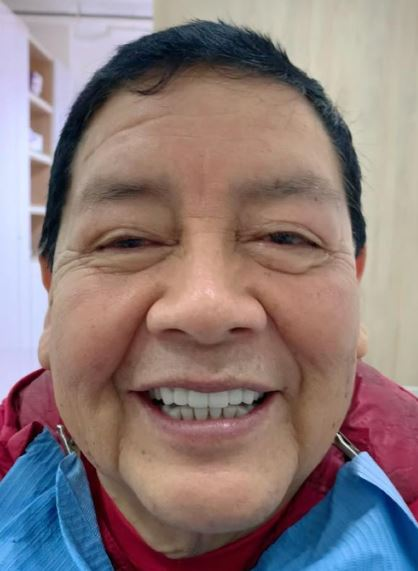
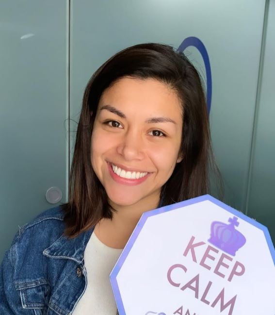
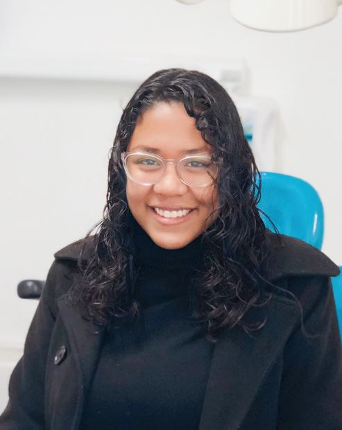
Consultorio
Ambiente profesional, ordenado y preparado para brindar una experiencia odontológica cómoda y segura.
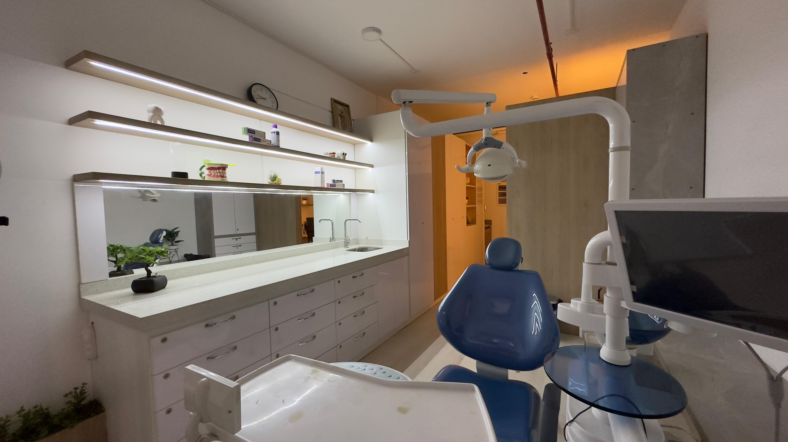
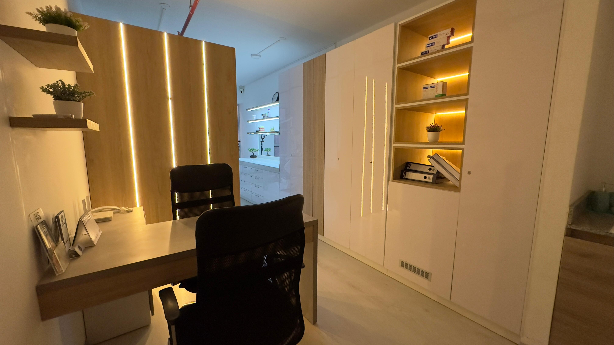
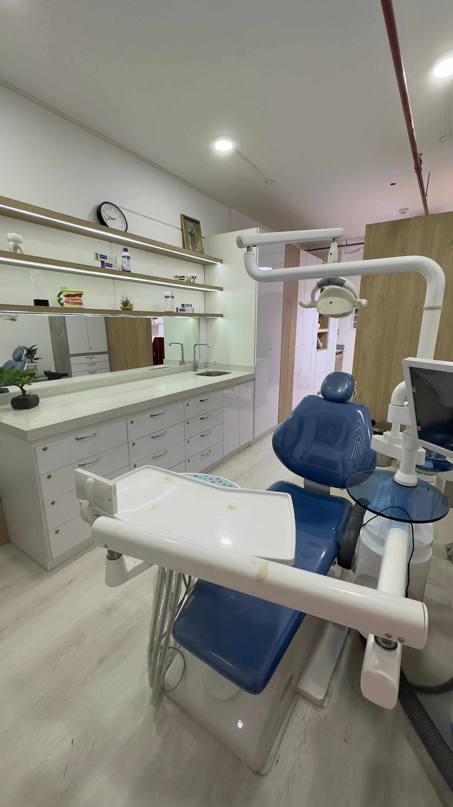
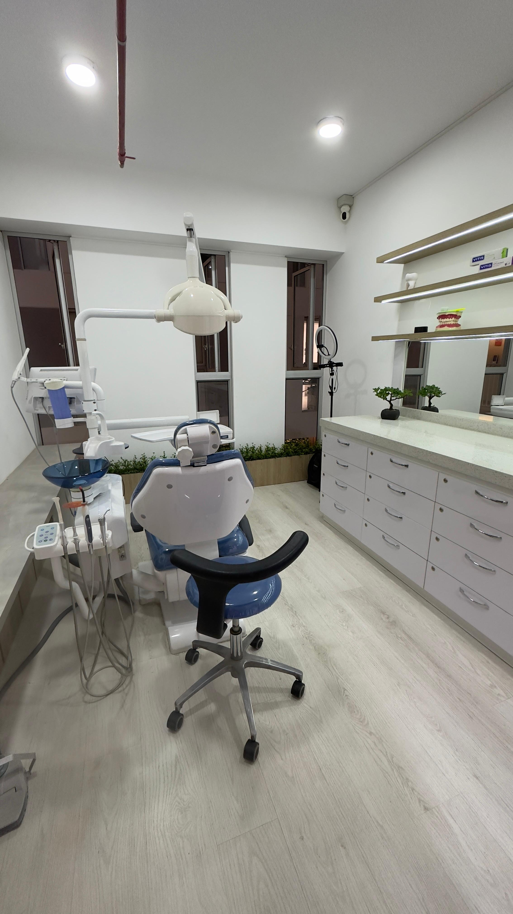
Reserva tu cita
Para brindarte una mejor atención, primero completa el formulario con tus datos. Luego podrás comunicarte por WhatsApp para confirmar la cita.
Ubicación
Puedes revisar la ubicación en Google Maps para obtener indicaciones desde tu ubicación actual.
Dirección: Edificio Smart Boutique, Oficina 1903, Calle Roca de Vergallo 493, Magdalena, Lima, Perú
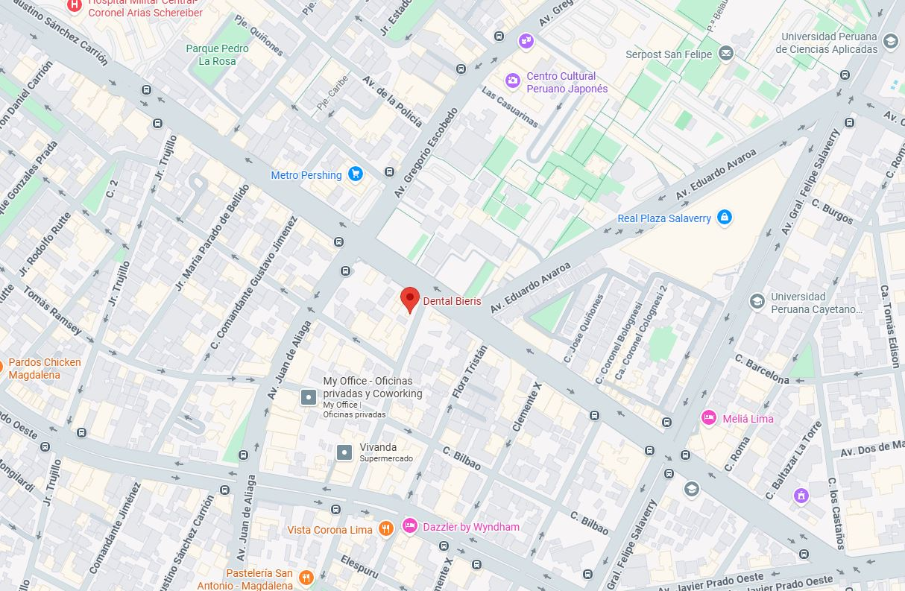
COP 38185
Rehabilitación Oral, Estética Dental y tratamientos odontológicos personalizados.